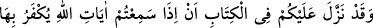
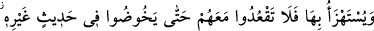
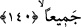

Onlar Allah katında zelil kimselerdir. “Bilsinler ki bütün izzet yalnızca Allah’a âittir.”
Durum onların zannettikleri gibi değildir. Onların görüşleri bâtıl olup ümitleri boşa
çıkacaktır. Şerefin tamâmı Allah Teâlâ’nın katındadır. Allah Teâlâ’nın kendileri için
şeref ve üstünlük yazdığı Allah dostlarından başkası için şeref ve üstünlük yoktur.
Allahu Teâlâ bu hususda “Şeref, Allah’a, Rasûlüne ve mü’minlere aittir.”
(Münâfikûn, 63/8) buyurmuştur. Bu âyet, şeref vermenin noksanlardan münezzeh olan
Allah’dan başkasına âit olamayacağını ve bu şerefden başkasının faydalanmasının
imkansız olduğunu belirtmektedir.
140- O (Allah), Kitap’ta size şöyle indirmiştir ki: Allah’ın âyetlerinin inkâr
edildiğini yâhut onlarla alay edildiğini işittiğiniz zaman, onlar bundan başka bir söze
dalıncaya (konuya geçinceye) kadar kâfirlerle berâber oturmayın; yoksa siz de
onlar gibi olursunuz. Elbette Allah, bütün münâfıkları ve kâfirleri cehennemde
toplayacaktır.
“O (Allah), Kitap’ta şöyle indirmiştir ki:” Buradaki hitap münâfıklaradır.
Müfessirler şöyle demişlerdir: Mekke müşrikleri toplantılarında Kur’an’dan alaylı bir
şekilde bahsediyorlardı. Bu hususta Allah Teâlâ Mekke’de nâzil olan En’am sûresinde
şu âyeti inzal buyurmuştur: “Âyetlerimiz hakkında ileri geri konuşmaya dalanları
gördüğün zaman, onlar başka bir söze geçinceye kadar onlardan uzak dur.” (6/68)
Ayrıca Mekke’deki müşriklerin yaptığı bu münâsebetsizliği Medîne’li yahûdî hahamlar
da yapıyordu. Münâfıklar onlarla berâber oturuyor onların batıl sözlerine katılıyor,
muvâfakat ediyorlardı. Allah da bu münâfıklara hitaben “Allah Kitap’ta size indirmiştir
ki...” âyetini indirdi. Yani Allah daha önce size öyle yapmayın diye Mekke’de de âyet
indirmişti. Ayrıca âyet, Peygamber (s.a.v.)’e indirilen Kur’an’daki hitap ona yöneltilmiş
olsa bile umûmu şâmil olduğuna delâlet eder.
“Allah’ın âyetlerinin inkar edildiğini yâhut onlarla alay edildiğini işittiğiniz
zaman, onlar bundan başka bir söze dalıncaya kadar onlarla berâber oturmayın.”
Âyetten anlaşılmaktadır ki, onlardan yüz çevirip onlarla oturmamanın sebebi onların
Allah’ın âyetleriyle alay etmelerini bilmeleridir. Öyle ise onlar inkar ve alayın dışında
bir söze daldıkları zaman onlarla sohbet etmek câizdir. Âyet şuna da delalet etmektedir:
Onlardan yüz çevirmekten kasıt, sâdece kalben değil bizzat yüz çevirerek onların
yanından kalkmak sûretiyle onlara muhâlefet etmektir.